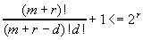

CMSC 417 Midterm #2 (Spring 1997) - Solutions
- (15 points) Define and explain
the following terms:
- forbidden region: illegal combinations
of time/sequence numbers that could permit data from old connections
to be accepted as part of a current connection. Caused by node
crashes or sequence number wrap around.
- flow control: matching rates
between producers and consumers. Can be done at the link or network
layers.
- two army problem: explains the
problem of communicating over an unreliable network. The problem
is that two parties can never know if the last message sent was
correctly received. This problem relates to deleting a connection
between two hosts.
- MTU: Maximum Transfer Unit. The
largest packet/frame size that can travel over a network or link.
- bit stuffing: a way to prevent
the occurrence of a frame boundary string from occurring in data.
After a specific sub-string of the pattern is seen, a bit is
inserted to prevent the target string from appearing.
- (15 points) Error correction and
detection.
- What is the minimum number of error
recovery bits required to recover from an n bit error? Explain
why this number of bits is sufficient.
let n = m + r, m is the message length,
r is the number of error recovery bits. To be able to recover
from a d bit error we need to have n choose d invalid messages
for every valid message. n choose d is the number of ways you
can flip exactly d bits in an n bit message. There are 2m
valid messages so: [(n choose d) + 1] 2m <=2
but n = m + r so [(m + r) choose d + 1] <= 2r

so that the bit pattern with n errors
is the closest (min. hamming distance) bit pattern to the correct
message (it's n bits away and the rest will be at least n+1).
- If the ratio of error detection
bits to payload bits remains constant, what are the tradeoffs
between having the error bits applied to a single character vs.
a block of characters?
Bigger blocks can
detect longer burst errors
Smaller blocks
reduce latency when sending small frames and reduce the amount
of data to be re-transmitted when an error occurs.
- (20 points) One way to support mobile
hosts is by assigning a host a temporary IP address in its new
location, and continuing to use its old address by tunneling
IP through IP back to an agent running on the mobile host's home
network.
- Explain the steps required to permit
a mobile host to register on a local network and start receiving
packets using its permanent IP address.
- connect to local server (agent)
on the foreign network and request temp IP address.
- local agent contacts home agent
to inform it of the mobile host's temporary IP address.
- home agent starts tunneling packets
destined from the mobile host on its temporary.
Other answers that provide the same
information exchange are possible.
- Give one advantage and one disadvantage
of this approach to IP mobility compared with having a mobile
host only use its permanent IP address.
+ only need the remote agent to setup
the transfer, not forward each packet
+packets can be sent directly to
the mobile host at its temporary IP address to prevent sending
packets long distances twice.
- software could cache temporary
IP address and re-use it after the mobile moves again.
- uses two IP addresses
- When tunneling IP through IP, it
is not possible to always maintain a one for one match between
tunneled packets and the native packet. Why? Explain the potential
performance implications of this limitation.
Tunneled packet needs an IP header
and if the packet to tunnel is already at the MTU for the network,
the extra size will require it to be fragmented. Fragmentation
will slow down the network due to extra overhead of processing
two packets and the need to re-transmit all parts of a fragment
if one is lost.
- (15 Points) IP Addresses
- The Internet is running out of IP
addresses to assign, but there are substantially less than four
billion hosts on the Internet. Explain why this is happening.
Internal fragment due to IP addresses
being assigned in blocks rather than one at a time.
- Joe Hacker reads about IPv6 (with
128 bit address) and is concerned about routing table size. He
decides that the best solution is to encode latitude and longitude
into IP addresses. Explain how this might be used to reduce routing
table size. Provide a reason why this might not reduce routing
table size.
Geographic information could be used
as the basis of hierarchical routing. Nodes would store detailed
routing information for its local region and only sparse information
for distant nodes. The problem is that due to administrative
domains and different ISP's physical location is not equivalent
to nearest neighbor for routing purposes.
- (15 Points) Consider a network
where on average, messages between two hosts must travel through
10 routers (and thus 11 hops). On average, one packet in every
1,000 is lost as is passes through a router.
- If one packet in 100 is garbled
per hop, what is the probability of a packet making it through
the network if no link level re-transmission is used? What if
link-level re-transmission is used?
With re-transmission,
link garbling does not occur so p = .99910
Without re-transmission, link garbling
and router drops can happen so p = .99910 x .9911
- Repeat part a if the probability
of a link garbling a packet is 1 in a billion.
With re-transmission, link garbling
does not occur so p = .99910
Without re-transmission, p = .99910
x (1-10-9)11, conclusion don't need
link retransmission when link error probability is very low.
- (15 points) Congestion Control
- Why is congestion control more important
in a network carrying traffic whose bandwidth requirements vary
dynamically during a session compared with fixed bandwidth traffic?
With static traffic, congestion avoidance
via call admission can be used. With dynamic traffic, call admission
leads to under utilization of the network due to conservative
allocation choices.
- In TCP (Jacobson) congestion control,
the variance in round-trip times for packets implicitly influences
the congestion window. Explain how a high variation in the round-trip
time affects the congestion window. What is the impact of this
high variation on the throughput for a single connection?
With all other things being the same
(i.e. losses and congestion), high variance in RTT will lead to
a long timeouts for re-tranmission. This will make congestion
detection slower since we only close the window when a packet
is dropped (detected via a timeout). As a result, it is more
likely the network will get into a congested state, this will
reduce the throughput of our connection.